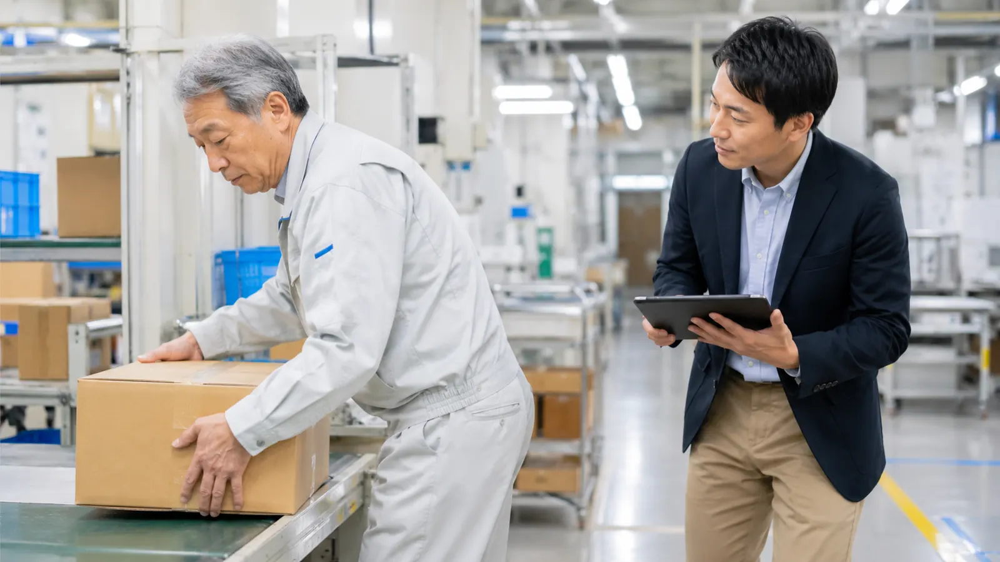

この記事の要点
- 腰痛は2種類に分けて判断：業務上腰痛の認定基準では、仕事中の突発的な出来事による「災害性の原因による腰痛」と、腰に過度の負担がかかる仕事による「災害性の原因によらない腰痛」に分けて考えます。
- ぎっくり腰はただちには対象外：日常的な動作の中で生じるため、仕事中でもただちに労災補償の対象とはなりませんが、動作や姿勢の異常性から腰に強い力が加わった場合は認められることがあります。
- 判断するのは労働基準監督署：会社だけで「労災ではない」と決めず、発症時の状況を記録し、手続きは所轄の労働基準監督署に確認します。
- 予防は作業の見直しから：腰痛予防対策指針に沿って、重い物の扱い方、作業姿勢、作業時間を見直すことが、労災になる腰痛もならない腰痛も減らす基本です。
この記事が役立つ方
- 従業員から「仕事中に腰を痛めた」と相談を受け、労災になるのか迷っている総務・人事・安全衛生の担当者の方
- 重い物を扱う、前かがみの作業が多いなど、腰痛が出やすい職場を抱える経営者・現場責任者の方
- 雪かきや年末の繁忙期を前に、腰を痛める従業員を出さないための備えを考えたい方
職場の腰痛は、どのくらい起きているのですか？
腰痛は、仕事が原因の病気（業務上疾病）の中で最も多いものです。神奈川労働局の「職場の腰痛災害防止対策について」では、2025年の業務上疾病（新型コロナウイルス感染症を除く）に占める災害性腰痛の割合は71.6%で、7割を超えて高止まりの傾向が続いていると紹介されています。業種別では保健衛生業（社会福祉施設など）の割合が高く、年代別では40代が最も多いとされています。
そのため、「従業員が仕事中に腰を痛めたら、労災になるのか」は、多くの会社が一度は直面する疑問です。ここでは、厚生労働省のリーフレット「腰痛の労災認定」（令和7年3月版）をもとに、担当者が押さえておきたい考え方を整理します。なお、この記事は一般的な考え方の紹介で、個別のケースが労災に当たるかどうかは労働基準監督署が判断します。
どのような腰痛が労災として認められるのですか？
リーフレットでは、業務上腰痛の認定基準として、医師により療養の必要があると認められた腰痛を、次の2つに分けています。
| 区分 | 主な要件 | リーフレットの例 |
|---|---|---|
| 災害性の原因による腰痛 | 腰の負傷やその原因となった急激な力の作用が、仕事中の突発的な出来事によって生じたと明らかに認められ、その力が腰痛を発症させた（または既往症・基礎疾患を著しく悪化させた）と医学的に認められること | 重量物の運搬中に転倒した、2人で重量物を運んでいて一方が滑り、急に重さが加わった |
| 災害性の原因によらない腰痛（筋肉等の疲労） | 腰に過度の負担がかかる仕事に比較的短期間（約3か月以上）従事したことによるもの | 約20kg以上の重量物や重さの異なる物を繰り返し中腰で扱う（港湾荷役など）、腰にとって極めて不自然な姿勢を毎日数時間保つ（配電工の柱上作業など）、長時間同じ姿勢を続ける（長距離トラックの運転など）、腰に大きな振動を受ける作業を続ける（車両系建設用機械の運転など） |
| 災害性の原因によらない腰痛（骨の変化） | 重量物を取り扱う仕事に相当長期間（約10年以上）従事したことによるもの | 約30kg以上の重量物を労働時間の3分の1程度以上、または約20kg以上の重量物を労働時間の半分程度以上取り扱う |
リーフレットには、割れ物を運んでいる途中に転倒して腰をひねった事例（災害性の原因による腰痛）や、港湾荷役で約20kgの荷を約3年間扱っていた事例（災害性の原因によらない腰痛）が、認められた例として紹介されています。いずれも、腰にかかった力や負担の大きさが、作業の内容や状況から説明できることがポイントです。
ぎっくり腰や、もともと腰痛がある場合はどうなりますか？
担当者からよく聞かれるのが、いわゆる「ぎっくり腰」です。リーフレットでは、ぎっくり腰（病名は「急性腰痛症」など）は日常的な動作の中で生じるので、たとえ仕事中に発症したとしても、ただちに労災補償の対象とはならないとされています。一方で、発症時の動作や姿勢の異常性などから、腰への強い力の作用があった場合には、労災補償の対象として認められることがあるとも書かれています。「仕事中だったから労災」「ぎっくり腰だから労災ではない」と、どちらにも決めつけないことが大切です。
また、椎間板ヘルニアなどの既往症や基礎疾患のある従業員が、仕事によりその疾病が再発したり重症化したりした場合は、その前の状態に回復させるための治療に限り労災補償の対象となるとされています。持病がある従業員だから対象外、とは限りません。
北海道では、これからの季節、屋外の雪かきや凍った路面での転倒をきっかけに腰を痛めることも増えます。業務として行う除雪作業の腰痛予防は、雪かき・除雪作業の腰痛予防の記事で詳しく紹介しています。
従業員が腰を痛めたとき、会社はまず何をすればよいですか？
労災に当たるかどうかを判断するのは会社ではなく労働基準監督署です。会社としては、本人の体を最優先にしたうえで、後から状況を説明できるように事実を残しておくことが大切です。次のような点を確認しておくと、手続きの相談にも、再発防止の検討にも役立ちます。
- 痛みやしびれの有無を確認し、医療機関の受診を勧めたか
- いつ、どこで、どの作業をしていたときに痛めたかを記録したか
- そのときの動作や姿勢（持ち上げた、ひねった、滑った・転びかけた など）を本人や周囲から聞き取ったか
- 取り扱っていた物の重さ、運んだ距離、作業を続けていた時間を確認したか
- ふだんの作業内容（重い物を扱う頻度、中腰や同じ姿勢の時間、従事している期間）を整理したか
- 労災の手続きについて、会社だけで判断せず所轄の労働基準監督署に確認したか
- 同じ作業で腰を痛める人が出ないよう、作業の見直しを検討したか
手続きの具体的な方法や必要書類は、所轄の労働基準監督署や都道府県労働局の案内で最新の情報をご確認ください。
労災になる腰痛を出さないために、日頃から何をすればよいですか？
認定基準の例を見ると、重い物の取扱い、前かがみや中腰、長時間同じ姿勢、振動といった、腰に負担のかかる条件が並んでいます。これらは、厚生労働省の「職場における腰痛予防対策指針及び解説」で見直すよう示されている作業そのものです。指針に沿って、次の点から見直します。
| 指針の主な内容 | 職場での見直し例 |
|---|---|
| 重量物は台車や補助機器を使い、人力の負担を減らす | よく運ぶ重い物を洗い出し、台車やリフトを使う物、2人で持つ物を決める |
| 人力で扱う重量は、満18歳以上の男性で体重のおおむね40%以下、女性はさらにその60%位までを目安とする | 重い物は小分けにする、1人で持たない重さを決めて掲示する |
| 取り扱う物の重量をできるだけ明示する | 箱や置き場所に重さを書き、持つ前に分かるようにする |
| 前かがみ・中腰・ひねりなどの不自然な姿勢を避ける | 床置きを減らす、作業台の高さを合わせる、物に体を近づけて扱う |
| 同じ姿勢を長く続けない、小休止や作業の組み合わせを工夫する | 運転や立ち作業の合間に休憩や姿勢を変える時間を設ける |
| 配置の際とその後必要に応じて、腰痛予防の教育を行う | 新しく入った人に、重い物の持ち方や台車の使い方を実際の作業場所で伝える |
何から手を付ければよいか迷う場合は、職場の腰痛対策の進め方の記事で、現状把握から優先順位の付け方までを紹介しています。業種ごとの見直しのポイントは、介護・製造・運送の腰痛・転倒予防の記事もあわせてご覧ください。
外部の専門家に依頼すると、何をしてもらえるか
プライズネス健康経営サポートでは、理学療法士が職場を訪問し、重い物の取扱い、前かがみや中腰の姿勢、長時間同じ姿勢を続ける作業など、腰に負担がかかりやすい場面を確認して、見直しの優先順位を提案します。従業員向けには、腰に負担の少ない動き方や体操を実技で学ぶセミナーを、朝礼や会議の時間に合わせて行うこともできます。内容はサービス内容、費用の目安は料金プランでご確認いただけます（例：単発セミナー55,000円〜、職場訪問評価132,000円〜、定期サポート月額88,000円〜）。なお、労災の認定や手続きの代行は行っていません。本サービスは医療行為ではなく予防のための支援で、特定の成果をお約束するものではありません。
腰を痛める従業員を出さない職場づくりを、一緒に考えませんか
「最近、腰を痛める従業員が続いている」「どの作業が腰に負担をかけているのか分からない」という段階からご相談いただけます。まずは職場の腰痛リスクを3分でセルフチェックし、その結果をもとに無料相談をご利用ください。
よくある質問
仕事中にぎっくり腰になった場合、労災になりますか？
厚生労働省のリーフレット「腰痛の労災認定」では、いわゆる「ぎっくり腰」（急性腰痛症など）は日常的な動作の中で生じるため、仕事中に発症したとしても、ただちに労災補償の対象とはならないとされています。ただし、発症時の動作や姿勢の異常性などから腰への強い力の作用があった場合には、対象として認められることがあります。個別のケースが労災に当たるかどうかは労働基準監督署が判断するため、迷う場合は所轄の労働基準監督署に相談してください。
どのような腰痛が労災として認められるのですか？
リーフレットでは、業務上腰痛の認定基準として、医師により療養の必要があると認められた腰痛を「災害性の原因による腰痛」と「災害性の原因によらない腰痛」に分けています。前者は、仕事中の突発的な出来事による急激な力で腰を痛めた場合で、重量物の運搬中に転倒した場合などが例に挙げられています。後者は、重量物を取り扱う仕事など腰に過度の負担がかかる仕事に従事し、作業の状態や期間からみて仕事が原因で発症したと認められる場合です。
もともと腰痛やヘルニアがある従業員の場合はどうなりますか？
リーフレットでは、椎間板ヘルニアなどの既往症または基礎疾患のある労働者が、仕事によりその疾病が再発したり重症化したりした場合は、その前の状態に回復させるための治療に限り労災補償の対象になるとされています。持病があるからといって一律に対象外になるわけではありませんが、判断は労働基準監督署が行います。
従業員が仕事中に腰を痛めたとき、会社はまず何をすればよいですか？
まずは本人の状態を確認し、痛みやしびれがある場合は医療機関の受診を勧めます。そのうえで、いつ、どの作業で、どのような動作や姿勢のときに痛めたのか、取り扱っていた物の重さなどを記録しておくと、労災の手続きの相談や再発防止の検討に役立ちます。労災に当たるかどうかを会社だけで決めず、手続きは所轄の労働基準監督署に確認してください。
プライズネスに依頼すると、何をしてもらえますか？
理学療法士が職場を訪問し、重い物の取扱い、前かがみや中腰の姿勢、長時間の同じ姿勢など、腰に負担がかかりやすい作業を確認して、見直しの優先順位を提案します。従業員向けに、腰に負担の少ない動き方や体操を実技で学ぶセミナーも行います。費用の目安は単発セミナー55,000円〜、職場訪問評価132,000円〜、定期サポート月額88,000円〜です。労災の認定や手続きの代行は行っていません。医療行為ではない予防のための支援で、特定の成果をお約束するものではありません。痛みやしびれがある方には医療機関への相談をおすすめしています。
関連する記事
この記事は、公的機関などの公開資料をもとにAIを活用して作成しています。労災の認定は個別の事情により労働基準監督署が判断するもので、この記事は認定の可否を示すものではありません。制度や数値は変わることがあるため、ご判断の際は出典の最新情報をご確認ください。医療上の判断が必要な症状については医療機関にご相談ください。
出典・参考：
厚生労働省 リーフレット「腰痛の労災認定」（令和7年3月）
神奈川労働局「職場の腰痛災害防止対策について」
厚生労働省「職場における腰痛予防対策指針及び解説」（愛知労働局掲載）
（いずれも2026年11月17日確認）